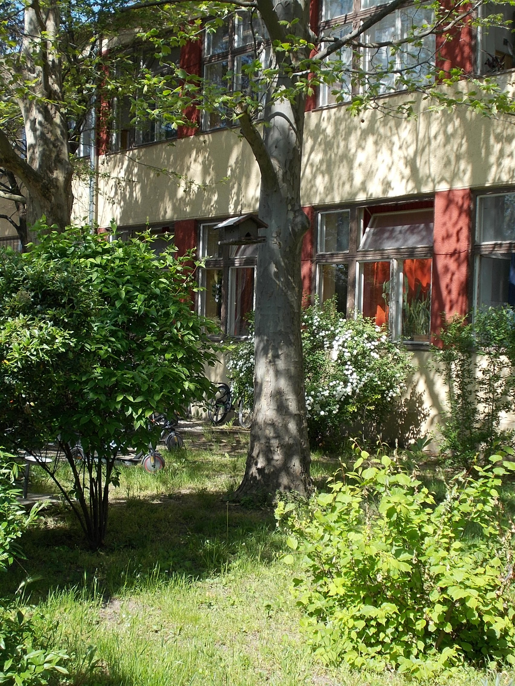

第 12 章
喂食者的悖论
编号Q3-2019-012的2019年第三季度内部会议纪要，归入城南公园管理处“园容管理”档案。第七项议题标题为“关于鹭岛区域投喂行为的整改情况”，五号宋体记录了巡查员的劝阻次数与

三名周边退休居民的反馈。
纪要附件是一组现场照片。其中一张拍摄了鹭岛入口的告示牌：白底红字，“禁止投喂野生动物”下方，两处灰白色陈旧鸟粪痕迹沿金属边框向下流淌，在红字上结成不规则斑块。照片焦点未落在文字上，而是落在鸟粪痕迹上——拍摄者试图记录的不是管理规定本身，而是管理规定与鸟类活动之间的空间关系：鸟站在告示牌上排便，告示牌禁止人给鸟投食。
这份纪要是一个入口。它记录的不仅是某个公园的管理困境，也是一张网络的一个节点。这张网络由人类的投喂行为编织而成，覆盖在城市绿地上空，将原本分散的鸟类个体连接成围绕食物脉冲波动的临时集群。每一个喂食点都是这张网上的一个结，每个结都在同时做两件事：聚集鸟类，和改变鸟类。
城南公园的鹭岛是一处人工湖心岛，面积不到两亩。每年四月到九月是鹭类繁殖季节，岛上的树冠层密布着树枝搭成的巢穴。公园管理方在连接鹭岛与岸边的石桥入口处设立了那块告示牌，并在旁边配置了一只蓝色垃圾桶——这个配置本身就是一种矛盾信号：垃圾桶暗示人们可以在此处产生食物垃圾，告示牌禁止人们将食物递给鸟类。在实际使用中，这两者之间的界限由每个游客自己划定。
纪要第七项议题的讨论记录显示，管理方对投喂问题的定性发生过一次微妙变化。2018年之前，内部文件使用的措辞是“不文明行为”，归入“游园秩序”类目。2019年3月起，该议题被移入“园容管理”类目，与植被养护、水体治理并列。这个行政分类调整意味着，管理方开始将投喂视为生态问题而非秩序问题。但纪要同时记录了一个事实：做出调整之后，投喂行为的劝阻成功率并没有上升。
巡查员老周在汇报中提供了一个细节。劝阻成功的那十九次，几乎全部发生在工作日早晨的年轻游客身上。“他们就是顺手一扔，你说一句他们就停了。”而那十一个返回原地继续投喂的人，以及三个声称“鸟认识他们”的常客，“都是老人，每天固定时间来，带的都是自己家里拿的小米、剩饭。你跟他们讲道理，他们比你还能讲——他们说冬天鸟没东西吃，人不喂就会饿死。”
这个细节指向了投喂行为的第一层复杂性：它不是单一行为，而是一个行为谱系。谱系的一端是无意识的资源供给——游客手里没吃完的面包随手丢给凑近的麻雀，垃圾桶旁散落的食物残渣被珠颈斑鸠啄食。另一端则是高度仪式化的定点投喂——固定时间、固定地点、固定食物种类、固定投喂者与取食者之间的关系认知。两端之间分布着各种中间形态：阳台上的喂食器、越冬期在小区绿地撒的玉米碴、单位食堂后门留给流浪猫和顺便光顾的喜鹊的剩饭。每一种形态对应着不同的生态后果。但在检视这些后果之前，有必要先回到那个最基础的现场：当一小把小米撒向地面的那一刻，发生了什么。
清晨六点四十分，城南公园湖滨广场。一个穿深蓝色棉袄的老人从塑料袋里抓出一把黄小米，手臂划出一道低矮弧线。小米粒落在石板地面上，发出细密的沙沙声，持续不到一秒。三秒之内，第一只麻雀落在那片小米旁边。它不是从远处飞来的——它一直就在广场边缘的冬青绿篱里。在小米落地之前，它已经看见了老人从塑料袋里抓取的动作。
城市麻雀已经学会了将人类的特定动作与食物出现建立关联——不只是塑料袋的窸窣声，还包括晨练者走向固定位置的行进路线、手臂伸入随身布袋的角度、手腕甩出的预备姿态。这些动作序列构成了一个信号系统，麻雀对这个系统的识别准确率高于对自然环境中食物线索的识别。这不是因为麻雀变聪明了，而是因为城市的食物信号比野外的更规律、更可预测。
第十秒，广场上的麻雀增加到二十只以上。它们从绿篱、灯柱、垃圾桶边缘和邻近屋檐下同时出现，像被同一根线牵动的木偶。落地的位置精确围绕在小米散布区域的边缘，形成一个直径约两米的松散圆圈。没有一只麻雀直接落在小米最密集的中心——那是留给最后可能出现的大型鸟类的缓冲空间。
第三十秒，两只珠颈斑鸠从广场西侧榕树上滑翔而下，落点比麻雀更靠内圈。麻雀群在斑鸠落地的瞬间整体向外移动了大约三十厘米，像水面被投入石子后荡开的波纹。斑鸠不驱赶麻雀，麻雀也不攻击斑鸠。它们之间维持着一种基于体型差的稳定距离：斑鸠低头一次的幅度更大、耗时更长，单位时间内的取食效率反而低于麻雀。这种效率差使两种鸟可以在同一片食物上共存——麻雀取食表层散粒，斑鸠清理地面缝隙中滚落的部分。
第一分十五秒，两只喜鹊出现了。它们从广场东侧管理用房屋顶上直线飞来，翅膀扇动频率稳定，没有盘旋和观察动作。这意味着它们不是被小米吸引的——小米太小，不值得喜鹊专门飞一趟——它们是被聚集的麻雀和斑鸠吸引的。喜鹊的觅食策略中包含一项“注意其他鸟类聚集”的行为模式：当多种小型鸟类在同一地点集中时，通常意味着那里有值得探查的资源。
喜鹊落地的位置在小米散布区正中心。麻雀群整体向外又移动了半米。一只珠颈斑鸠抬起头，颈侧的黑色领珠在晨光中闪了一下，然后继续低头啄食——斑鸠在面对喜鹊时选择不直接对抗，但也拒绝退出取食区。另一只斑鸠退到广场边缘石凳下方观察局势。喜鹊在小米里翻找了几秒，其中一只抬起头发出短促的、金属质感的鸣叫。这声鸣叫的功能不是警告入侵者，而是召唤同伴——喜鹊是合作觅食的鸟类，发现资源后会通过叫声招募群体成员。三分钟后，第三只喜鹊加入。
麻雀的数量已增加到四十只以上。它们不再维持最初的圆圈阵型，而是散成几个更小的群组：有的在小米最初落点周围，有的跟踪被喜鹊啄食时溅出的散粒滚入石板缝隙的轨迹，有的转移到老人脚边不到一米的位置啄食他从指缝间漏下的碎屑。老人站在那里一动不动，手还保持着撒小米时的姿势，塑料袋口敞开垂在身体一侧。他的眼睛看着面前的鸟群，表情平静。这是他的日常仪式。他做这件事已经三年了。
这个场景本身并不特殊。在中国的任何一个城市公园里，类似的场景每天都在重复上演。特殊的是这个场景所启动的那条因果链——一条投喂者本人在撒下小米的那一刻无法看见、也不一定愿意承认的因果链。
第一条链是关于数量的。麻雀、斑鸠和喜鹊在广场上的聚集不是随机分布的结果。城南公园总面积约三十公顷，湖滨广场面积不到零点三公顷。在没有投喂的情况下，三十公顷范围内麻雀的分布相对均匀——每公顷大约八到十二只，取决于植被覆盖和建筑物密度。但在投喂发生的早晨，广场上零点三公顷内集中了超过四十只麻雀。这意味着周边至少四公顷范围内的麻雀被同一个食物脉冲吸引到了同一个地点。
这种聚集效应在生态学上被称为“资源脉冲响应”。在自然环境中，资源脉冲通常是季节性的——果实成熟的季节、昆虫羽化的高峰、鱼类洄游的节点。鸟类在进化历史中形成了对这些自然脉冲的行为适应：在资源丰富时集中取食、快速积累能量储备。但城市的投喂行为制造了一种自然界中不存在的脉冲节律：每天早晨六点半到八点之间，每周七天，全年无休——除了极端天气和老人生病的日子。
这种节律的后果之一是改变了鸟类的活动范围预算。一只不需要花整个早晨在三十公顷范围内觅食就能获得足够热量摄入的麻雀，会把多余的时间花在什么地方？一部分用于休息和消化——广场周围的绿篱和屋檐下白天经常能看到蓬松着羽毛、半闭着眼睛的麻雀，这是饱食后的状态。另一部分时间则可能被重新分配到繁殖活动中。多项城市鸟类学研究已证实，在人类食物补贴强度高的区域，部分留鸟的繁殖季节有提前和延长的趋势。这不是简单的“食物多所以繁殖多”的线性关系——食物补贴改变了雌鸟的身体状况阈值，使启动繁殖行为所需的最低体脂储备更容易达到。
但这条链还有另一个分支。当四十只麻雀集中在零点三公顷面积上取食时，它们的粪便也会集中在同一区域。鸟类粪便中含有大量氮、磷和未消化的食物颗粒。在自然散布状态下，这些物质均匀回归土壤被植被吸收利用。但在集中排泄的情况下，局部地面的氮磷负荷会超过土壤吸收能力。湖滨广场石板地面上，老人每天撒小米的固定位置周围，地面颜色比其他区域深一个色阶——那不是小米本身的颜色，而是长期鸟粪积累和雨水冲刷后渗入石板缝隙的有机质残留。
粪便集中带来的另一个问题是病原体传播。鸟类粪便中可能携带沙门氏菌、弯曲杆菌和鹦鹉热衣原体等多种病原微生物。
在正常散布密度下，个体接触同类粪便中病原体的概率很低——一只麻雀一天之内不太可能踩到另一只麻雀的粪便。但当四十只麻雀在两小时内轮流在同一片三十平方米的石板地上取食、踱步、排便时，接触概率呈指数增长。
有研究追踪了投喂点与非投喂点之间家雀肠道菌群的差异，发现投喂点的家雀肠道中检测到的人源细菌种类显著多于非投喂点——这意味着投喂点不仅改变了鸟类之间的微生物交换模式，还增加了跨物种传播的概率。同一项研究还记录了一个更隐蔽的效应：投喂点的家雀肠道菌群多样性低于非投喂点。研究者的解释是，高碳水、低纤维的人工食物改变了肠道环境，抑制了某些对纤维消化至关重要的菌种。
这就是第二条链：关于质量的。老人塑料袋里的小米是去壳谷粒，主要成分是碳水化合物，蛋白质含量约百分之九，脂肪含量约百分之四，纤维含量极低。这个营养构成与麻雀在自然环境中取食的草籽、昆虫和嫩芽完全不同。一只成年麻雀在繁殖季节每天需要的蛋白质摄入量大约相当于其体重的百分之六到八——这些蛋白质在自然条件下主要来自昆虫和其他小型无脊椎动物。一把小米可以满足麻雀的热量需求，但无法满足其蛋白质和微量元素需求。
问题在于，麻雀的胃容量是有限的。如果一只麻雀早晨吃了足够多的小米填饱了嗉囊，它在接下来几个小时内就不会再有强烈的觅食驱动力——即使它体内实际上缺乏蛋白质和钙。这种现象在营养生态学中被称为“高热量营养不良”：动物摄入了足够甚至过量的热量，但仍然缺乏关键的微量营养素。对于成年麻雀而言，这种营养失衡的影响是慢性的、累积性的。
但对于雏鸟而言，影响可能是急性和致命的。麻雀育雏期间，亲鸟将食物先吞入嗉囊软化再反刍喂给雏鸟。如果亲鸟嗉囊里装的是小米而不是昆虫，雏鸟获得的蛋白质就无法满足骨骼和羽毛发育需求。在极端情况下，这会导致雏鸟出现代谢性骨病——骨骼在快速生长期因缺钙无法正常硬化，结果是翅膀骨骼畸形、无法飞行。
城南公园鹭岛上的鹭类面临的是另一种质量问题。鹭类是肉食性鸟类，自然食谱是鱼类、蛙类、水生昆虫和小型甲壳动物。但在投喂点周围，夜鹭和白鹭已经学会了取食人类投喂的面包、馒头和饼干。这些食物的碳水化合物含量通常在百分之六十以上，而一只夜鹭在自然状态下的饮食中碳水化合物占比不到百分之五。鹭类消化系统对这种高碳水负荷的处理能力非常有限。未被充分消化的碳水化合物进入后肠后会发酵产气，导致肠道胀气和腹泻。长期取食高碳水食物的鹭类个体会出现羽毛光泽度下降、飞羽磨损加速等症状——这些都是蛋白质和必需脂肪酸摄入不足的外在表现。
城南公园管理处的纪要附件中有一份2018年夏季水质监测报告。报告显示，鹭岛周边湖水的总磷和总氮含量在每年七到八月达到峰值，恰好与鹭类繁殖季节高峰期重合。监测人员在备注栏中注明：“可能与岛面鸟粪负荷增加及游客投喂食物残渣入水有关。”这条备注措辞克制，却揭示了一个环状因果结构：投喂吸引更多鹭类聚集，更多鹭类产生更多粪便和食物残渣，更多粪便和残渣进入水体导致富营养化，富营养化导致鱼类死亡和藻类爆发，鱼类减少反过来又增加了鹭类对人工投喂的依赖。
这正是“垃圾链”在城市水体中的一个典型断面：以人类食物垃圾为起点——无论是游客主动投喂的面包块还是野餐后散落的零食碎屑——经由鸟类取食和排泄改变营养物质的形态和浓度，进入水体后触发藻类增殖，藻类分解消耗水中溶解氧导致水生动物死亡，死亡动物尸体进一步加重水体有机负荷。这条链的高能量通量来自人类食物中密集的热量输入，低营养质量来自加工食品中微量元素的流失，高病原体风险来自鸟类异常聚集导致的粪便交叉污染。
第三条链是关于行为本身的。湖滨广场上的鸟群在老人撒下小米后的第三分钟达到了一个临时社会秩序。这个秩序由三个层级构成：顶层是喜鹊——数量少但个体大，占据食物最密集的中心区域；中层是珠颈斑鸠——不挑战喜鹊但也不完全退出，在中心区边缘和石凳下方的散落区之间切换；底层是麻雀——数量最多但个体最小，通过快速移动和高频取食在外围区域获取资源。
这个层级结构不是老人创造的，而是鸟类在城市投喂环境中自发形成的社会排序。但这个排序的稳定性依赖于一个条件：食物的空间分布必须是集中的、可预测的。如果小米均匀撒在整个广场上而不是集中在一处，喜鹊就无法垄断核心区，麻雀也不需要在外围等待——资源分散化会瓦解等级结构的空间基础。
老人的投喂方式恰好创造了集中分布的条件：他每次都是从塑料袋里抓出一把小米，用同一只手、同一种力道、在同一个位置撒出去。这个动作序列的重复性使小米的落点范围高度固定。三个月后，广场上的麻雀已经不需要看到老人的动作就能预测小米会落在哪里——它们只需要看到老人出现在广场东侧入口处，就会提前向那个固定落点附近移动。
这种行为关联在生态学上被称为经典条件反射——与巴甫洛夫的狗听到铃声分泌唾液是同一个机制。但城市鸟类对投喂行为的条件反射不止于时间地点的预测。更深入的研究记录到了一些更复杂的行为变化：北京的一些公园里，喜鹊能够区分手里拿着面包的游客和手里拿着相机的游客——它们对前者的接近距离明显更近，起飞逃离的阈值更高；上海的一些社区中，珠颈斑鸠已经学会在固定时间守候在特定楼层的阳台外沿——那些阳台上安装了喂食器的住户每天早晨七点左右会添加新的谷物。
这些行为变化单独看都是适应性的——它们提高了鸟类获取食物的效率。但当这些行为在整个种群层面扩散时，就产生了一个结构性问题：鸟类对人类的接近距离整体降低了。一只对人类保持三十米警戒距离的喜鹊和一只只保持五米警戒距离的喜鹊，在面对同一个潜在威胁时的反应时间相差将近两秒。这两秒差距在面对自然捕食者时可能是致命的——流浪猫在城市绿地中的伏击距离通常在五到十米之间。如果一只喜鹊习惯了人类在三米距离内无害地投喂食物，它就无法在同样距离内对人类以外的大型哺乳动物保持足够警惕。
这就是投喂悖论的核心结构：人类出于善意提供的食物补贴，在个体层面帮助鸟类获得了额外的能量收入；但这些能量收入所依赖的行为改变——聚集、警戒距离降低、食物选择的去自然化——在种群层面制造了一系列新的风险敞口。这些风险敞口不是投喂者能够看见或控制的。一个每天早晨在公园撒小米的老人没有能力监测广场石板下沙门氏菌的浓度变化，也没有能力评估周边麻雀种群的肠道菌群多样性是否下降。他能看见的是鸟来了、鸟吃了、鸟没有饿死。这个可见的正反馈遮蔽了那些不可见的负反馈。
管理方的困境正是从这个遮蔽结构中生长出来的。城南公园管理处2019年第三季度的纪要中还有一条被标注为“待议”的事项：“是否需要在鹭岛入口增设语音提示设备。”这个提议的背景是，静态告示牌的劝阻效果已接近天花板——常客们对告示视而不见，新游客往往在读完告示后仍然投喂，“因为他们看见别人在喂”。语音提示的逻辑是用更主动的干预方式打破这个行为惯性。
但纪要没有记录的是这个提议后来被搁置的原因。老周在后续口头汇报中提到一个细节：语音提示设备安装测试期间，鹭岛上的一只八哥在三天之内学会了模仿提示音的片段。“禁止投喂”四个字的电子合成音被那只八哥嵌入了它的晨间鸣唱序列中，夹在两段自然颤音之间反复播放。游客的反应不是停止投喂——他们觉得有趣，拿出手机拍摄那只模仿禁令的八哥，然后继续把手里的面包撕碎丢进水里。
这个细节的讽刺意味如此精确：管理方试图用技术手段规训人类的投喂行为，结果技术手段发出的声音被一只鸟吸收为自己的鸣唱素材，而这只鸟的鸣唱反过来吸引了更多人的注意力——包括更多潜在的投喂者。八哥是一种通过终身学习不断更新鸣唱曲目的鸟类，城市中的机械提示音、警报声、手机铃声都是它采集的声音素材。
“禁止投喂”的电子合成音对一只八哥而言只是另一个可供模仿的城市声音片段——它不关心语义内容，只关心频率结构是否足够独特、是否值得纳入自己的混音带以增加吸引配偶或宣示领域的竞争力。
但八哥无意识的模仿行为客观上消解了禁令的严肃性：当一个游客听到鸟在“说”“禁止投喂”时，他很难把这条禁令当回事——连鸟都在拿它开玩笑。
管理处最终搁置了语音提示方案。纪要中没有说明具体原因。但2020年第一季度的纪要中出现了一条新记录：鹭岛入口的告示牌更换了内容。“禁止投喂野生动物”下方增加了一行小字：“您的善意可能成为它们的负担。”这行字的措辞策略值得注意：它不再诉诸规则和惩罚，而是诉诸投喂者的初始动机并试图对这个动机进行重新框架——“负担”这个词暗示善意可能产生与意图相反的结果。
在城市的不同角落，投喂行为的形态正在分化出更多变体。阳台喂食器是其中增长最快的一种。这种装置通常是一个悬挂在阳台栏杆外侧的塑料或木质平台，上面放置谷物、瓜子或专用鸟食。与公园地面投喂不同，阳台喂食器创造的是一种垂直分布的食物资源——它位于建筑物中高层立面，只有飞行能力较强的鸟类才能利用。这种空间筛选效应改变了能够获取补贴的物种构成：地面投喂点主要惠及麻雀、斑鸠和喜鹊等地面取食鸟类；阳台喂食器则更多地被白头鹎、八哥和丝光椋鸟等树栖或半树栖鸟类使用。
在某些高层住宅小区中，阳台喂食器甚至吸引到了红隼——不是来吃谷物，而是来捕食被谷物吸引的小型鸟类。这就形成了一个三层营养级的微型食物网：人类提供谷物作为第一层，小型鸟类取食谷物构成第二层，猛禽捕食小型鸟类成为第三层。这个网络的能量基础是阳台喂食器里的那把瓜子——它来自超市货架上的包装袋，其生产、加工、运输和销售链条与城市的自然生态系统没有任何关系。但通过喂食器这个界面，工业化的农产品被注入了城市野生动物的食物网。
这个注入过程的一个重要特征是不可预测性。阳台喂食器的投放节奏完全取决于住户的个人习惯：有的人每天添加一次食物，有的人想起来才加一次，有的人只在冬季添加，有的人出差期间喂食器会空置一周。这种不规则的资源脉冲与自然环境中季节性、周期性的资源波动完全不同——它创造了一种鸟类无法通过进化适应来预测的食物供给模式。
无法预测的资源供给会导致两种可能的行为响应：一种是过度利用——鸟类在食物出现时尽可能多地取食和囤积，即使当下实际需求并没有那么高；另一种是放弃依赖——鸟类将阳台喂食器视为不可靠的随机资源，只在其他食物来源匮乏时才临时光顾。在实际观察中，这两种响应同时存在于不同物种甚至不同个体之间。白头鹎倾向于将阳台喂食器纳入自己的常规巡视路线——每天早晨巡视一遍辖区内所有已知食物点，不管那个点当天有没有食物；麻雀则表现出更强的机会主义倾向——发现食物后迅速召集同伴集中取食，食物耗尽后立即转移到下一个资源点。
这种物种间的策略差异意味着同一把瓜子对不同鸟类产生的生态效应是不同的：对白头鹎而言是稳定的补充性能量来源；对麻雀而言是高波动性的脉冲式收益。稳定补充和脉冲式收益对种群动态的影响路径完全不同——前者倾向于提高个体平均身体状况和越冬存活率，后者倾向于在繁殖高峰期为部分个体提供额外的繁殖投入资本。
一项针对花园喂食器的系统性追踪研究提供了关键数据：喂食器确实提高了目标物种的冬季存活率和早春繁殖启动率；但这种正面效应在不同物种之间分布极不均匀——某些物种受益最大，另一些几乎没有从中获得可测量的种群增长。研究者对此的解释指向了喂食器对群落结构的重塑效应：喂食器创造了一个人为的资源富集点，那些能够快速适应并垄断这个富集点的物种获得了不成比例的优势；而那些因体型、行为或食性原因无法有效利用喂食器的物种则相对受损——不是因为它们的绝对数量下降了，而是因为竞争物种的数量上升了，导致它们在群落中的相对地位被边缘化。
这个机制在中国的城市语境中同样成立。当公园里的固定投喂点持续为麻雀和喜鹊提供高热量补贴时，那些不依赖地面取食或不参与投喂点竞争的物种——比如棕背伯劳、戴胜或柳莺——并没有直接从这种补贴中受益。但它们间接承受了补贴带来的后果：受益物种的种群扩张可能挤占更多的巢址资源和领域空间。
这就回到了本章开头那份纪要所揭示的核心张力：管理方试图维持的是一种符合生态学理想的、各物种均衡分布的群落状态；但投喂行为实际创造的是一个由人类食物补贴驱动的、少数优势物种不成比例扩张的非均衡状态。这两个状态之间的落差不是靠一块告示牌或者一行小字能够弥合的。
2019年11月，城南公园进行了一次鸟类种类和数量的年度调查。结果显示，公园范围内记录到的鸟类种类数为三十七种，与五年前的三十八种基本持平。但种类数的稳定掩盖了群落内部的结构性变化：麻雀的数量在过去五年间增长了约百分之四十，喜鹊增长了约百分之二十五；几种地面筑巢的鹀科鸟类数量下降了超过一半。调查报告没有对变化原因做出明确归因，但在“建议”部分中有一条措辞谨慎的表述：“建议关注长期定点投喂行为对公园鸟类群落结构的潜在影响。”
这条建议落在纸面上已经两年了。
今天早晨六点四十分，穿深蓝色棉袄的老人仍然出现在湖滨广场上。他的塑料袋里装的还是黄小米。麻雀仍然在三秒之内落在小米旁边。喜鹊仍然在一分十五秒后从屋顶飞来。一切看起来都和昨天早晨一样。
但这只是可见的那部分。不可见的部分正在缓慢积累：石板缝隙中的有机质又厚了一层；某只麻雀肠道里对纤维消化至关重要的菌种又少了一群；鹭岛水边的总磷浓度又上升了一个微小的刻度；一只学会了从阳台喂食器取食的白头鹎今天早上没有吃到东西——住户昨天出差了，喂食器空着——它需要在接下来两个小时内找到替代的食物来源来弥补巡视路线中这个节点的落空。
这些不可见的积累构成了城市鸟类群落真正的变动方向。它不是由某一次投喂行为决定的，而是由成千上万次投喂行为的累积效应决定的。每一次撒下小米的手臂弧线都是一个微小的生态干预动作——微小到投喂者本人不会察觉其后果，但累积到足够的次数和密度之后足以改变一个物种在城市中的分布边界、繁殖节律和行为模式。
这就是喂食者悖论的最终形态：人类通过投喂行为将自己嵌入了城市生态网络的编织过程中——不是作为旁观者或保护者，而是作为一个非理性的、高波动的资源脉冲源。这个脉冲源的能量来自人类的善意、习惯和无意识的浪费；它的生态后果则遵循着与善意完全无关的生物物理规律和种群动态规律运行。
那张网络确实存在。但它不是一个稳定的庇护所。它是一个持续波动的场域——每一次投喂都在重新调整场域内各节点的位置和强度。而控制这张网络的开关并不掌握在管理方的会议纪要里，也不掌握在生态学家的研究报告中。它掌握在每一个早晨走向公园的那个人的手中——那只从塑料袋里抓出小米的手同时也在编织一张它自己看不见的网。